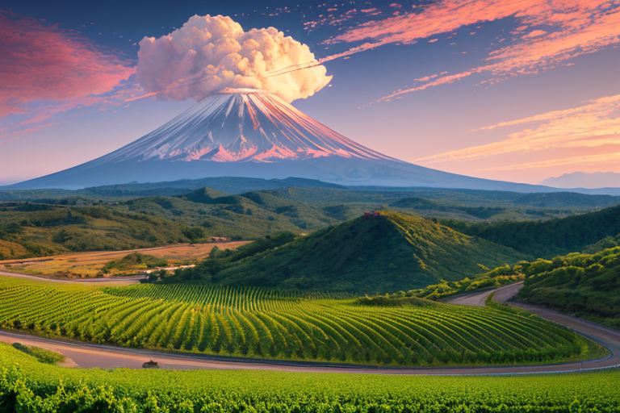
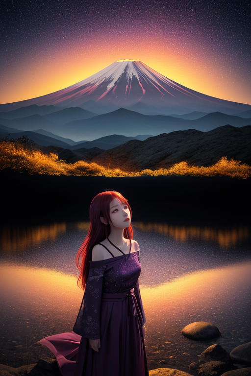
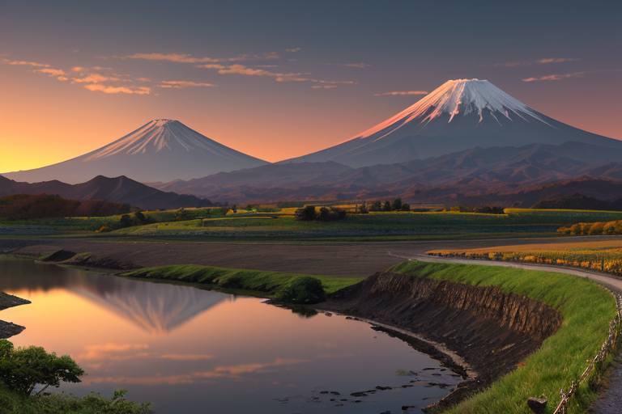
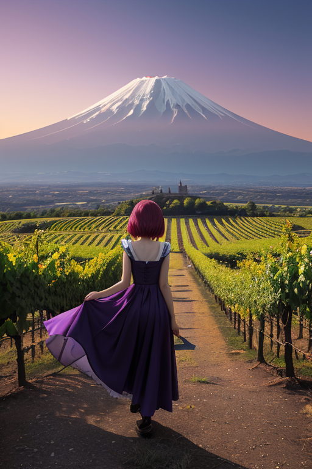

第一章 現実の山梨
あなたはまだ気づいていない。この土地にも、王がいることを。
富士五湖の水面は、今日も霊峰を完璧に映し出す。しかしその底では、目に見えない歪みが絶えず蓄積している。日本列島を縦断する巨大な歪みの帯は、ここ山梨の地下で複雑に屈曲し、霊峰富士の巨大な質量がそれをさらに増幅させる。世界王プロジェクトの一員であるヤマナリア・ルミナは、その歪みの境界線に立っていた。彼の王国「ヤマナリア・ルミナ」は、山と平野の境、活火山と人々の生活の境、まさに「山境」そのものを司る。
甲府盆地を見下ろす彼の目には、ぶどう畑が規則正しい縞模様を描き、桃の花が淡いピンクの霞をまとう春の風景が広がっていた。しかし彼の視界の大半は、それらの美しい風景ではなく、地中を流れる無数のストレスラインと、富士山体に蓄えられた膨大な火山性圧力で埋め尽くされていた。彼の仕事は、それらが臨界点に達しないよう、絶え間なく微調整を施すことだ。大きな災害を消し去ることはできない。せいぜい、揺れを一歩手前で弱め、逃げる時間を数秒だけ引き延ばすことしか。それでも、彼は淡々と作業を続ける。なぜ、このような高みを、この過酷な調整を目指し続けるのか。その問いは、まだ彼自身の内にも、明確な答えを持たない。

第二章 歪みの兆候
富士五湖の水面は、今日も穏やかに霊峰を映していた。しかし、ヤマナリアの視界には、湖底から山体へと伸びる無数の「圧力の脈管」が、普段より不穏な輝きを放っているのが見えていた。遠く、太平洋プレートの沈み込みが生む深部の歪みが、山梨の地殻を伝い、富士山体にまで微妙な「押し」を加え始めていた。外部からの、巨大な力の予兆だ。
「峰王様、南東側の基盤岩に、想定外の剪断応力が集中しています」
ルミナラの声に、彼は目を細めた。調整は常に、予測と現実の狭間で行われる。彼は指先を動かし、山体内部のマグマだまりの上層部にかかる圧力を、ほんのわずか、別の方向へ分散させる。大規模な火山活動を防ぐためではなく、その「引き金」となる瞬間を、ほんの少し先へずらすためだ。
高みを目指すのは、この圧倒的な力の前で無力ではないことを示すためか。それとも、ただ、この風景を、この実りを、次の瞬間まで保つためか。問いは、増大する歪みと共に、彼の内で深まっていった。

第三章 王の葛藤
富士五湖の水面は、歪みの増大を映し、微かに不気味な輝きを帯びていた。ルミナラが報告する数値は、全てが許容範囲を超えつつあることを示す。山梨の地盤は、東側からのプレートの圧力に、静かに、しかし確実に軋み始めていた。
「峰王様、これ以上、局所的な調整だけでは限界です」ルミナラの声には、初めて焦りの色が滲んでいた。「歪みは一点に集中しつつあります。分散させるか、ある一点で『受け入れる』かの選択を迫られています」
受け入れる。それは、ある地域に、調整の範囲を超えた揺れを集中させることを意味した。誰かの犠牲の上に、全体の均衡を保つ、王の冷酷な選択。ヤマナリアは甲府城跡から広がる盆地を見下ろした。ぶどう畑が夕陽に染まり、人々の営みが息づいている。
高みを目指すのは、この選択から逃れるためか。それとも、この選択を、より「人間らしい」形で行うためか。彼は、自らが進化しつつある感情──この土地への愛着と、そこに住まう者たちへの憐憫──が、純粋な調整者の判断を曇らせていることを知った。理想と現実の狭間で、彼は初めて、自らの「高み」が何であったのかを問い直す。
第四章 妖精との対話
清里高原の夜は、星が近い。ルミナラは、王の傍らに小さな光となって現れた。
「あなたは、『高み』を目指すことで、下界から逃れようとしている」
妖精の声は、風に乗って聞こえるようだった。
「でもね、峰王さま。本当の『高み』って、下を見下ろすことじゃないんです」
彼女は、かつて武田の騎馬が駆け抜けたという峠を指さした。
「あの峠も、富士山も、『境界』です。内と外を分け、同時につなぐ。あなたが感じ始めた『感情』も同じ。王であることと、この地を愛することを分かつ『境界』であり、それを越えて一つになるための『道』なんです」
ルミナラの光が微かに揺れた。
「別れを知るから、出会いが輝く。儚さを知るから、今が尊い。あなたが『調整』しているのは、歪みだけじゃない。この土地に積もった、出会いと別れのすべての『重み』を、ほんの少し軽く、優しくしているんです」
王は、妖精の言葉に、自らの問いの答えが、頂上ではなく、この「狭間」にあることを悟り始めた。

第五章 微調整と余韻
甲府城跡から見下ろす街並みに、夕闇が落ち始めていた。観光客の声も途絶え、静寂が戻ってくる時間だ。王は石垣の上に立ち、一日の「調整」の余韻を感じていた。富士山の圧力の微かな乱れを鎮め、清里高原を吹き抜ける風の向きをほんの少し変え、ぶどう畑に忍び寄る遅霜の気配を分散させた。目立たない、小さな仕事の積み重ね。
「今日も、たくさんの『出会い』がありましたね」
ルミナラが肩に止まり、囁く。
「山を目指して来た人、故郷を離れてここに根を下ろした人、ただ通り過ぎる人…。そのすべての軌跡が、この土地の『重み』なんです」
王は頷いた。高みを目指す理由。それは、頂上に立つためではなく、登る過程で出会うすべてのもの――風、光、人、別れ、そして新たな始まり――を、ほんの少しだけ守り、整えるためだった。頂上は孤独だが、登攀路には常に誰かがいる。その「狭間」を、微調整によって哀しみだけが残らないよう、ほんのわずか希望が交差するように整える。それが、この歪みの列島に遣わされた者の役目。
紫に染まる西の空を背に、王はゆっくりとその姿を日常の中へと溶かしていった。
あなたの町にも、王がいる。